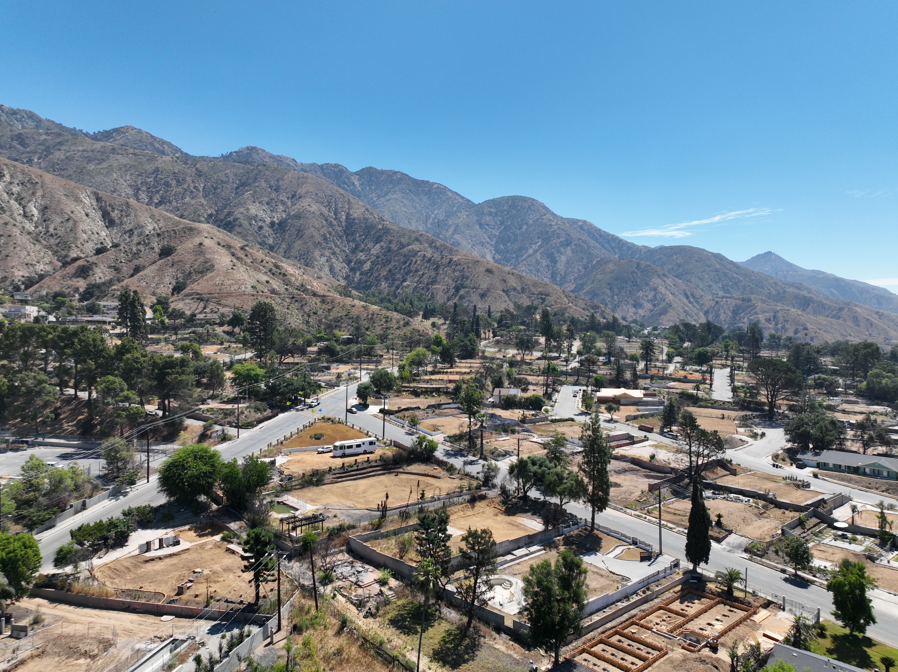
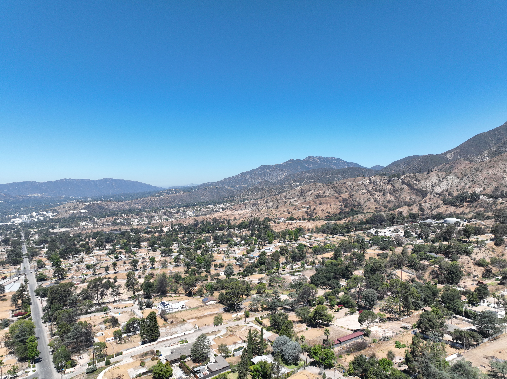
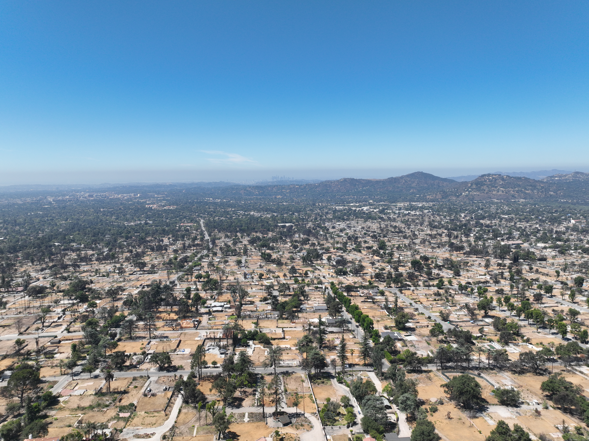

Overview
On January 7, 2025, the Eaton Fire ignited in the hills above Altadena, California. Burning for 24 days, it consumed over 14,000 acres and destroyed more than 9,000 structures — devastating a community already marked by deep disparities in disaster resilience. Nearly half of Altadena’s Black households lost their homes or suffered severe damage.
Among the hardest-hit institutions was the Las Flores Water Company, one of the last locally owned water utilities in the greater Los Angeles area. Founded in 1885 by community residents, Las Flores lost 75% of its customer base in the fire. Unlike large municipal utilities, it had no reserve institutional support — and federal recovery funding required precise, parcel-level damage documentation to even begin the application process.
This project, completed as a summer internship through USC’s Spatial Sciences Institute, delivered that documentation: a GIS-based field inventory of every water meter in the service area, paired with two interactive web maps and a formal FEMA damage report.
Recognition
2025 ArcGIS StoryMaps Competition — Student Winner
From Ashes to Action: Documenting Altadena’s water infrastructure revival was selected as a Student Winner in Esri’s 2025 ArcGIS StoryMaps Competition, recognizing outstanding spatial storytelling among university students worldwide.


Context — Las Flores Water Company
Las Flores is a rare institution: a community-owned water utility operating on a cooperative model since 1885, where each household holds shares and is responsible for maintaining their own meters and pipelines. This structure fostered deep community stewardship — but also meant the company lacked the reserves and institutional infrastructure of a municipal system when disaster struck.

Eaton Fire burn perimeter — 14,117 acres, January–February 2025
“Local control and shared ownership are Las Flores’s greatest strengths — and in a disaster, its greatest vulnerability. There was no large utility to absorb the shock. Recovery depended entirely on what could be documented.”
Other local companies were also impacted: Lincoln lost 60% of customers and Rubio lost 35%. But Las Flores, bearing the heaviest losses, became the focal point for coordinated GIS-based recovery documentation.
Data Collection — Fieldwork with Survey123
Our three-person team deployed Survey123 for ArcGIS as the field data collection platform. Each team member worked with a customized form that captured the full condition picture of every meter in the service area.
-
01
GPS Geotagging
Each water meter was precisely geolocated using Survey123’s built-in GPS, creating a spatial anchor for every data record — even in areas with irregular addressing from fire damage.
-
02
Field Photography
Photos of each meter were captured documenting physical condition: melted components, exposed pipelines, scorched enclosures, and missing hardware. These photos were embedded directly in the FEMA report.
-
03
Address & Parcel Linking
Each meter was linked to a specific street address and matched to its internal parcel number — critical for FEMA’s parcel-level verification requirements.
-
04
Damage Classification
Meters were classified by condition status, allowing the final dataset to quantify the extent of destruction across the service area at a glance.
Mapping — ArcGIS Pro Processing
Raw Survey123 data was brought into ArcGIS Pro for cleaning, validation, and spatial analysis. GPS points collected in the field often had minor location errors due to poor signal in the burn zones — each was manually corrected and verified against parcel boundaries.
A general street layer was used to compute service connections from each meter to the central distribution pipe. In some cases, centerlines had to be manually redrawn to account for inconsistencies between field-collected points and the underlying infrastructure data. Duplicate entries — instances where one parcel contained multiple meters — were identified and resolved.

Service connections — centerline mapping, ArcGIS Pro

Meter point density by damage classification

Parcel boundary validation — GPS correction pass
Impact & FEMA Documentation
The completed inventory directly supported Las Flores’s FEMA funding applications. Federal recovery programs — including BRIC (Building Resilient Infrastructure and Communities) and HMGP (Hazard Mitigation Grant Program) — require detailed, parcel-level damage evidence before releasing infrastructure repair funds. For a small cooperative utility, this standard is nearly impossible to meet without dedicated GIS capacity.
The final FEMA report, generated directly from Survey123, included photographs and condition assessments for all 1,078 meters, geolocation and timestamp data for each entry, and specific field notes documenting the nature and extent of damage.
This project demonstrates how GIS tools and student-led data collection can level the playing field for small, community-owned utilities navigating post-disaster federal funding processes — systems that were built for large institutional applicants.
Aerial Documentation
Drone footage was captured across the Las Flores service area to provide contextual aerial documentation of fire extent and infrastructure damage, showing the scale of destruction across Altadena’s residential grid.

Altadena residential grid — post-fire burn extent, looking west

Las Flores service area — scale of destruction visible from 400 ft AGL

Cleared parcels and standing structures — damage boundary detail